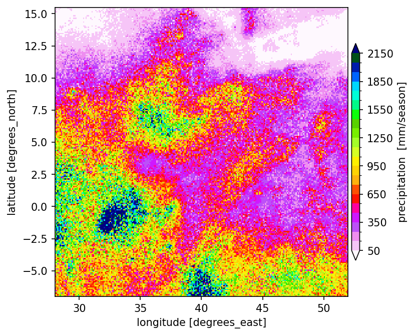

embedding ICPAC [Precipitation] FORECASTING into STORM
load some libraries…
[25]:
import gc
import glob
import numpy as np
import pandas as pd
import xarray as xr
import matplotlib.pyplot as plt
from pathlib import Path
define some constants
[18]:
sdic = {'JF': [1, 2], 'MAM': [3, 4, 5], 'JJAS': [6, 7, 8, 9], 'OND': [10, 11, 12]}
seas = 'MAM'
nsim = 2
nrun = 5
outp = '/home/cuwalid/SETS/sims/'
outp = '/home/cuwalid/training/forecast/regional/dataset/pre/pools/'
fdir = './forecast/'
Path(fdir).mkdir(parents=True, exist_ok=True)
fetch the data
[11]:
# fetch the pools
pool = list(map(lambda x: sorted(glob.glob(f'{outp}/{x}/*_MAM.nc')),
['poolA', 'poolN', 'poolB']))
# create the combinations
allp = np.asarray([f'{x}+{y}+{z}' for x in pool[0] for
y in pool[1] for z in pool[2]])
# selected random combinations
what = np.random.default_rng().choice(allp, size=nsim, replace=False).tolist()
# read the ICPAC terciles
icpac = xr.open_dataset('./ICPAC_precipForecast_2022-MAM.nc', chunks='auto',
decode_cf=True, mask_and_scale=True,)# drop_variables=['spatial_ref'],)
icpac = (icpac.tercile / 100).compute()
what are the combos?
[13]:
print(np.asarray(what))
['/home/manuel/SETS/sims//poolA/2015_MAM.nc+/home/manuel/SETS/sims//poolN/2005_MAM.nc+/home/manuel/SETS/sims//poolB/2024_MAM.nc'
'/home/manuel/SETS/sims//poolA/2014_MAM.nc+/home/manuel/SETS/sims//poolN/2004_MAM.nc+/home/manuel/SETS/sims//poolB/2021_MAM.nc'
'/home/manuel/SETS/sims//poolA/2012_MAM.nc+/home/manuel/SETS/sims//poolN/2012_MAM.nc+/home/manuel/SETS/sims//poolB/2020_MAM.nc']
helper functions…
[14]:
# sample either 0, 1, or 2 given some PROBS (probabilities)
def samp_ter(probs):
prabs = np.random.default_rng().choice(
[0, 1, 2], size=1, replace=True, p=probs, axis=0, shuffle=False,)
return prabs[0]
# retrieve the pool-file given 0, 1, or 2
def CH_OLL(above, normal, below, map_ter, n_files):
cual = [above, normal, below][map_ter]
return cual
main function:
[20]:
def fore_cast(chain, yy, ii):
print(f'\ncombo: {chain}\n')
filo = chain.split('+')
fool = list(map(lambda x: xr.open_dataset(x, chunks='auto',
decode_cf=True, mask_and_scale=True,), filo))
suma = fool[1].precipitation.load().copy(deep=True)
suma[:] = 0.0
suma = suma.drop_vars('time')
for i in range(nrun):
print(f'iter.. {i+1}')
some_a = xr.apply_ufunc(
samp_ter, icpac,
dask='allowed', vectorize=True,
input_core_dims=[['p'],],
output_core_dims=[[],],
)
some_b = xr.apply_ufunc(
CH_OLL,
fool[0].precipitation, fool[1].precipitation, fool[2].precipitation, some_a,
kwargs={'n_files': 3.14},
dask_gufunc_kwargs={'allow_rechunk':True, 'output_sizes':{'time':2208}},
output_dtypes=['f4'],
dask='parallelized', vectorize=True,
input_core_dims=[['time'], ['time'], ['time'], [],],
exclude_dims=set(['time',]),
output_core_dims=[['time',]],
)
step = some_b.compute()
# weighted sum
suma = suma + step / nrun
# data for netcdf
stamp = pd.date_range(
start=f'{sdic[seas][0]}/1/{yy}', end=f'{sdic[seas][-1] + 1}/1/{yy}',
freq='1h', inclusive='left'
)
suma['time'] = stamp
suma = suma.to_dataset(name='precipitation')
suma.rio.write_crs('EPSG:4326', inplace=True)
# homogenize names
suma.precipitation.attrs['long_name'] = 'precipitation_forecasting'
suma.precipitation.attrs['units'] = 'mm/h'
suma.lat.attrs['long_name'] = 'latitude'
suma.lat.attrs['valid_min'] = -90.0
suma.lat.attrs['valid_max'] = 90.0
suma.lat.attrs['bounds'] = 'lat_bnds'
suma.lon.attrs['long_name'] = 'longitude'
suma.lon.attrs['valid_min'] = -180.0
suma.lon.attrs['valid_max'] = 180.0
suma.lon.attrs['bounds'] = 'lon_bnds'
suma.time.attrs['standard_name'] = 'time'
# set.up PRECIPITATION
suma.precipitation.encoding['dtype'] = 'f4'
suma.precipitation.encoding['zlib'] = True
suma.precipitation.encoding['complevel'] = 9
suma.precipitation.encoding['contiguous'] = False
suma.precipitation.encoding['least_significant_digit'] = 2
suma.precipitation.encoding['shuffle'] = True
suma.precipitation.encoding['blosc'] = True
# export to NC
namo = f'{fdir}/{yy}_{seas}_{ii}.nc'
print('\nXporting NC.file...')
suma.to_netcdf(namo, mode='w')
gc.collect()
run the precipitation forecast!
[21]:
year = 2024 + np.r_[0:len(what)]
list(map(fore_cast, what, year, range(len(what)) ))
combo: /home/manuel/SETS/sims//poolA/2015_MAM.nc+/home/manuel/SETS/sims//poolN/2005_MAM.nc+/home/manuel/SETS/sims//poolB/2024_MAM.nc
iter.. 1
iter.. 2
iter.. 3
iter.. 4
iter.. 5
iter.. 6
iter.. 7
combo: /home/manuel/SETS/sims//poolA/2014_MAM.nc+/home/manuel/SETS/sims//poolN/2004_MAM.nc+/home/manuel/SETS/sims//poolB/2021_MAM.nc
iter.. 1
iter.. 2
iter.. 3
iter.. 4
iter.. 5
iter.. 6
iter.. 7
combo: /home/manuel/SETS/sims//poolA/2012_MAM.nc+/home/manuel/SETS/sims//poolN/2012_MAM.nc+/home/manuel/SETS/sims//poolB/2020_MAM.nc
iter.. 1
iter.. 2
iter.. 3
iter.. 4
iter.. 5
iter.. 6
iter.. 7
[21]:
[None, None, None]
let’s check the forecast now
[23]:
# pick one of the outputs that were produced in "./forecast"
fc = xr.open_dataset(f'{fdir}/{"2024_MAM_0.nc"}', chunks='auto',
decode_cf=True, mask_and_scale=True,)
print(fc)
fcs = fc.precipitation.sum(dim=('time')).compute()
<xarray.Dataset>
Dimensions: (lat: 225, lon: 240, time: 2208)
Coordinates:
* lat (lat) float32 -6.95 -6.85 -6.75 -6.65 ... 15.25 15.35 15.45
* lon (lon) float32 28.05 28.15 28.25 28.35 ... 51.75 51.85 51.95
* time (time) datetime64[ns] 2024-03-01 ... 2024-05-31T23:00:00
Data variables:
precipitation (time, lat, lon) float32 dask.array<chunksize=(1451, 147, 157), meta=np.ndarray>
spatial_ref int64 ...
the plotting happens here!
[27]:
# plot
fig, ax = plt.subplots(figsize=(6, 5), dpi=150)
fcs.plot(
x='lon', y='lat', cmap='gist_ncar_r', add_colorbar=True, vmin=50, vmax=2150,
levels=22, robust=True,# ax=ax,
cbar_kwargs={'shrink':0.75,
'aspect':27, 'label':'precipitation [mm/season]', 'pad':+.01,})
plt.show()
#plt.savefig(f'myFig.png', bbox_inches='tight', pad_inches=0.02)
